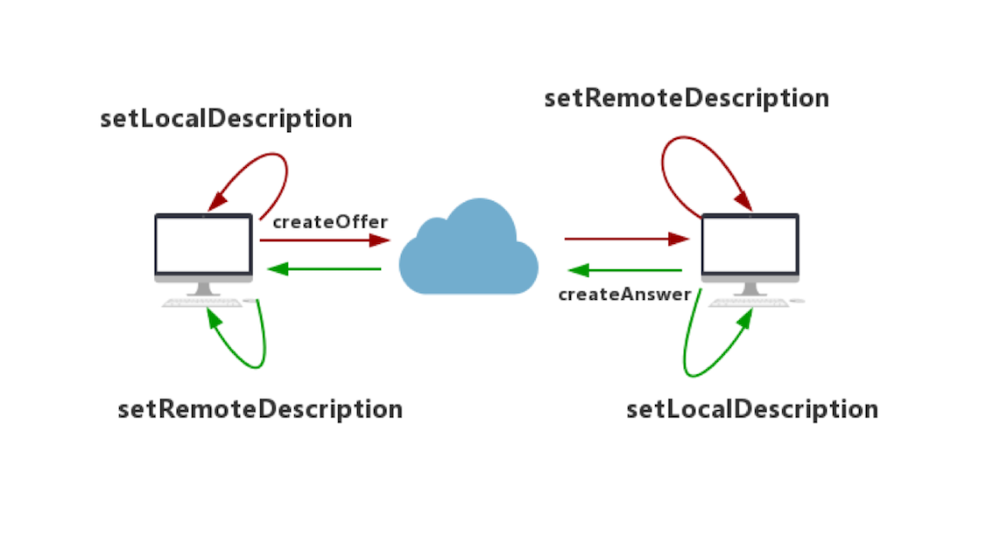

WebRTC简介
WebRTC (Web Real-Time Communications) 是一项实时通讯技术，它允许网络应用或者站点，在不借助中间媒介的情况下，建立浏览器之间点对点（Peer-to-Peer）的连接，实现视频流和音频流或其他任意数据的传输。
目前，WebRTC的应用已经不局限在浏览器与浏览器之间，通过官方提供的SDK，我们可以很容易的实现本地应用间的音视频传输。在Android平台上，我们也非常容易的集成WebRTC框架，用非常简洁的代码就能实现强大、可靠的音视频传输功能。
接下的来的部分，我们会一起搭建Android平台的WebRTC demo，并实现两端之间的局域网传屏功能，同时还支持相互间消息数据的发送。
导入WebRTC官方aar
google官方已经提供了打包好的so与java层sdk代码，可方便的直接导入aar包。
1 | implementation 'org.webrtc:google-webrtc:1.0.32006' |
如果对api部分或者so底层有修改，想自行发布编译好的aar咋办？在官方源码src/tools_webrtc/android/中build_aar.py与release_aar.py中有相关生成本地aar与发布aar到maven仓库的脚本。
当然，你也可自行编译so与引入java层sdk代码到项目中。但生成aar的sdk源码并不是放在一个位置，而是分散在WebRTC各个模块中，我们可以通过源码中src/sdk/android/BUILD.gn文件dist_jar("libwebrtc")任务查看相关代码依赖。
初始化PeerConnectionFactory
在初次使用PeerConnectionFactory之前，必须调用静态方法initialize()对其进行全局的初始化与资源加载。其中传参InitializationOptions通过内部Builder进行初始化，可对LibraryLoader、Tracer、Logger等进行设置，一般推荐放在Application中进行调用。
1 | PeerConnectionFactory.initialize(PeerConnectionFactory |
创建PeerConnectionFactory对象
完成全局初始化后，我们就可以创建PeerConnectionFactory实例了。这个工厂类非常重要，在后续创建连接及音视频采集/编解码中，需要其为我们生成各种重要的组件。如：PeerConnection、VideoSource、VideoTrack等…采用Builder模式对其进行初始化，可方便对其进行编解码器的设置。
1 | final VideoEncoderFactory encoderFactory = new DefaultVideoEncoderFactory(mEglBase.getEglBaseContext(), true, true); |
这里我们采用默认的DefaultVideoEncoderFactory和DefaultVideoDecoderFactory即可，可以简单看下内部的实现，以Decoder为例，其实内部同时支持软解与硬解，首选硬解，若硬解不支持则回退到软解：
1 | public class DefaultVideoDecoderFactory implements VideoDecoderFactory { |
通过Factory创建PeerConnection对象
生成了Factory后，我们就可以开始创建PeerConnection对象了。顾名思义，这个类代表点对点之间的连接，可以从远端获取音视频流等数据。在创建之前可以通过RTCConfiguration对连接进行详细的配置，最后通过createPeerConnection()方法完成创建。
1 | PeerConnection.RTCConfiguration rtcConfig = |
创建音视频数据源
除此之外，我们还可以使用Factory创建音视频的数据源。通过createVideoSource()与createAudioSource()方法即可快速创建数据源。但这里的数据源仅是抽象的表示，那具体的数据从哪里来呢？
对于音频来说，在创建AudioSource时，就开始从音频设备捕获数据了。对于视频流，WebRTC中定义了VideoCapturer抽象接口，并提供了3种实现：ScreenCapturerAndroid、CameraCapturer和FileVideoCapturer，分别为从录屏、摄像头及文件中获取视频流，调用startCapture()后将开始获取数据。
1 | // Create video source |
VideoCapturer这里采用了观察者模式，当获取到视频流的时候，会通过传入的CapturerObserver进行回调，以完成与VideoSource的关联。
1 | public interface CapturerObserver { |
最后通过createVideoTrack()与createAudioTrack()完成对Source的包装，对于视频轨VideoTrack，我们可以通过addSink()方法传入SurfaceViewRenderer以对视频流进行本地的渲染展示（类似于视频会议场景显示本地的视频流）
1 | // Create video track |
其中SurfaceViewRenderer为VideoSink接口的实现类，我们可以把VideoSink抽象的当做视频流的接收方，由它来决定视频流该如何处理。SurfaceViewRenderer在接收到onFrame()回调后，内部会调用OpenGL进行渲染。
1 | public interface VideoSink { |
添加MediaStreamTrack
创建好VideoTrack和AudioTrack后，我们就可以通过PeerConnection把音视频轨添加进去了。这样WebRTC 才能帮我们生成包含相应媒体信息的SDP，以便于后面做媒体能力协商使用。要注意addTrack()必须早于后续的商阶段，否则另一端无法收到相关的音视频数据。
1 | mPeerConnection.addTrack(videoTrack, mediaStreamLabels); |
建立信令服务器
在建立连接之前，我们必须通过信令服务器来交换SDP信息。简单起见，我们的demo采用局域网的传输方式，参考官方demo，直接采用java Socket实现（也可选择Netty或者socket.io等第三方框架），详见TCPChannelClient。代码较简单，判断传入的IP为local地址，则作为服务器，否则作为客户端，并向上层提供发送数据的接口。
1 | public TCPChannelClient( |
进行媒体协商
跟之前分析的Miracast RTSP协议类似，在进行音视频流传输之前，需要进行能力协商。实际就是你的设备所支持的音视频编解码器、使用的传输协议、SSRC等信息…通过信令服务器透传给对方。如果双方都支持，那么就算协商成功了。
- Offer：呼叫方发送的SDP消息称为Offer
- Answer：被呼叫方发送的SDP消息称为Answer
双方协商的整个过程如下图所示：

这里，我们以连接上的Client端为呼叫方先发起Offer请求，通过createOffer()创建一个Offer SDP。创建成功后，会在SdpObserver中收到onCreateSuccess回调，此时调用setLocalDescription()方法将该Offer保存到本地Local域，然后将Offer发送给对方。
1 | public class PeerConnectionWrapper implements PeerConnection.Observer, SdpObserver { |
被呼叫方接收到Offer后，通过setRemoteDescription()方法将Offer保存到它的Remote域，并通过createAnswer()创建Answer SDP，创建成功后同样调用setLocalDescription()方法将Answer消息保存到本地的Local域，然后回复给呼叫方。
最后，呼叫方将收到Answer消息，并通过setRemoteDescription()方法，将Answer保存到它的Remote域。至此，整个媒体协商的过程结束。
1 | mRTCClient = new DirectRTCClient(new AppRTCClient.SignalingCallback() { |
建立点对点连接
在媒体协商结束后，我们的点对点连接并没有真正的建立。此时createPeerConnection()中传入的PeerConnection.Observer会回调onIceCandidate()方法并提供IceCandidate对象，这个时候我们把他组装为candidate的SDP信令发送到信令服务器，透传给另外一端。
1 | public class PeerConnectionWrapper implements PeerConnection.Observer, SdpObserver { |
远端在收到IceCandidate对象后进行重建，并通过addIceCandidate()方法将其添加进PeerConnection中。
1 | mRTCClient = new DirectRTCClient(new AppRTCClient.SignalingCallback() { |
接下来双方获取到彼此的Candidate之后，WebRTC就开始尝试进行连接了。优先级：host > srflx > relay，host 类型之间的连通性检测就是内网之间的连通性检测，上述场景中我们的呼叫双方都在同一个局域网中，因此将以host的方式进行连接。
展示远端视频流
当点对点连接建立起来后，我们就可以开始获取音视频流数据了。之前在createPeerConnection()中传入的PeerConnection.Observer会回调onAddStream()方法（注意此方法会在收到远端SDP并调用setRemoteDescription()后，就会回调了，不用等连接真正建立，与onAddTrack()一致），并提供MediaStream对象，其中包含远端的音视频轨AudioTracks与VideoTracks。前面我们添加了一条录屏的视频轨，因此直接获取第一条VideoTrack对象即可，然后跟之前一样通过addSink()即可与SurfaceViewRenderer的绑定，从而渲染出视频流。
1 |
|
关于音频的录制及播放
在WebRTC中一般通过JavaAudioDeviceModule来实现音视频的录制及播放，底层采用AudioRecord来进行录制及AudioTrack来进行音频播放，通过Builder来构建实例。并在创建PeerConnectionFactory的时候通过setAudioDeviceModule()方法设置即可。
1 | private AudioDeviceModule createJavaAudioDevice() { |
使用DataChannel发送消息
WebRTC的数据通道DataChannel专门用来传输音视频流外的任何数据，所以它的应用非常广泛，如实时文字聊天、文件传输等…其中DataChannel有两种创建方式，一种是默认的In-band协商方式，另一种是Out-of-band协商方式，根据negotiated字段来初始化。
In-band协商
一端需调用createDataChannel()创建DataChannel对象，并设置negotiated为false（默认值）：
1 | DataChannel.Init init = new DataChannel.Init(); |
当媒体协商完成，并且连接建立好后，另一端则会通过PeerConnection.Observer的onDataChannel()回调获取到对应的数据通道，此时可通过参数DataChannel进行数据的回复：
1 |
|
双方通过DataChannel.send()方法即可相互发送数据：
1 | public void sendDataChannelMessage(String message, DataChannel dataChannel) { |
在另一端DataChannel.Observer()的onMessage()回调中，我们可以获取到远端发送的数据：
1 | ByteBuffer data = buffer.data; |
Out-of-band协商
两端都调用createDataChannel()方法创建DataChannel对象，并设置negotiated为true，再通过ID绑定来实现双方的数据通信。此方式的优点是双方发送数据时不用考虑时序问题，代码也更简洁一点，需注意绑定的ID必须一致：
1 | DataChannel.Init init = new DataChannel.Init(); |